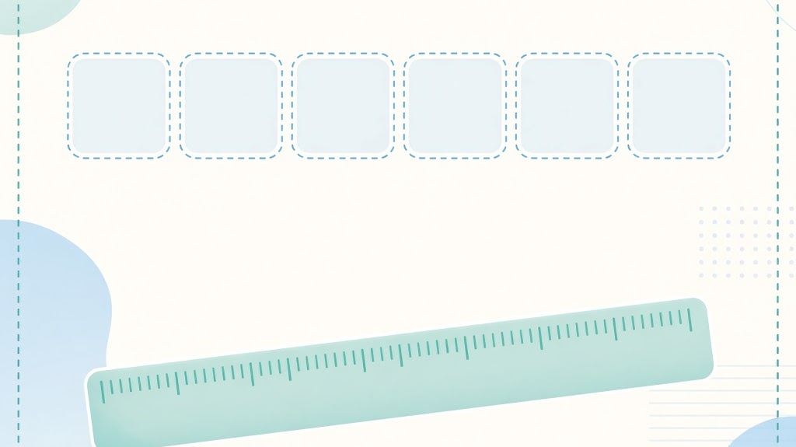
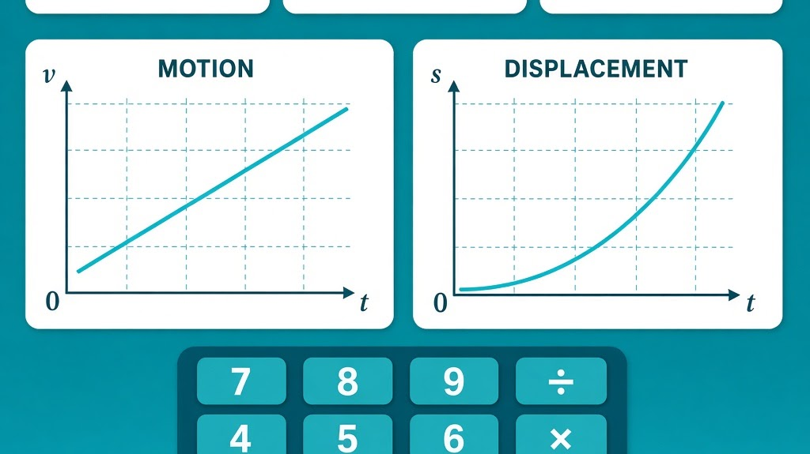
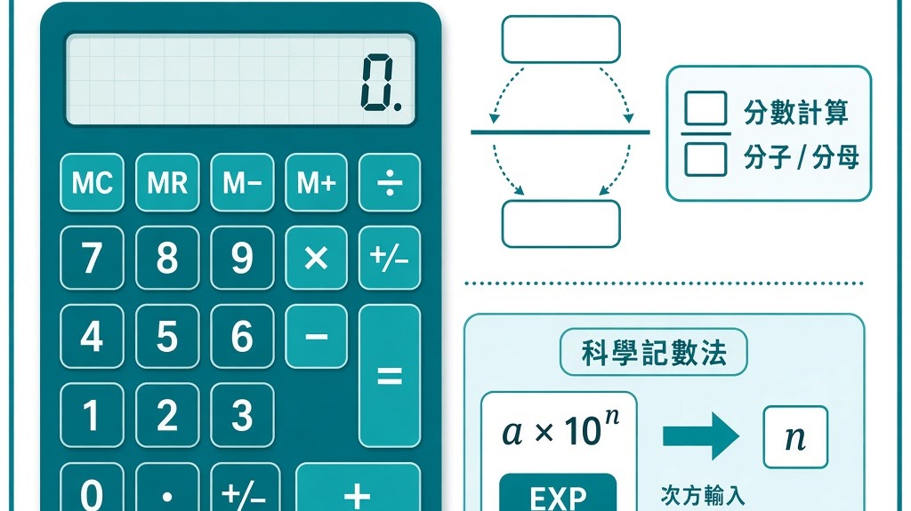
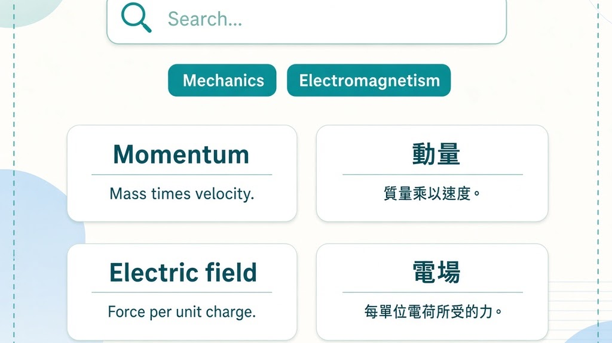

模擬實驗、AI 練習及其他學習工具
Simulations, AI practice and other learning tools

物理量單位練習
Physical Quantities & Units Practice
練習物理量與單位配對
Match physical quantities with their units

物理公式練習
Physics Formulae Practice
練習常用物理公式
Practise common physics formulae

物理計數機技巧練習
Physics Calculator Skills Practice
練習科學計數機操作技巧
Practise scientific calculator skills for physics

物理概念詞彙練習
Physics Concept Vocabulary Practice
練習物理概念中英詞彙
Practise bilingual physics concept vocabulary